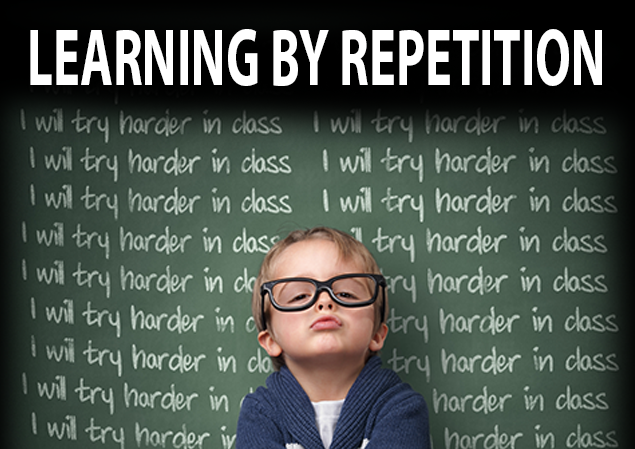

"I may have said last week's module was bad but....THIS WEEK WAS WORSE despite the decreased workload.Sometimes, I wonder if I'm actually getting worse or better? Hopefully the latter. However,I think it was mainly due to added pressure from my other subjects that lead to this disastrous week,especially my decreased efficiency in time management but luckily I managed to finish everything just in time! :O
The main focus of this week's lectures was on functions as the lectures 17-20 all mentioned the idea of functions from the repetition, replication, redundancy of functions to the most basic elements of functions. Loops in particular were an interesting aspect of functions as they proved to be the most difficult aspect especially in relation to the activities. Both individual activities this week required the use of loops and many times I felt constrained by the use of loops because of my limited understanding of them but as I made my mistakes, I learnt more!!! In particular, the wondrous function was quite challenging because of the many components that it contained. Being the forgetful self I am, I forgot to initialise the counter a few times >.< and as a result the loop wasn't compiled. But as I discovered, this was actually a common mistake and I'm not alone in this boat of forgetfulness!
Also, this week we got a new member in our small group for labs and with an extra person, there was now less workload on our shoulders!! It was much easier to tackle the lab activities. Even though we still didn't manage to finish both activities in the duration of the tutelab, we managed to finish the majority of it!!! It was such fun working with my team members ( Gary & Henna) and despite all our struggles, we have managed to pull through it all! ^.^
Once again during this week's module, I discovered the importance of craftsmanship as the code got more complex. In the instance that there is no craftsmanship present, it can be literally impossible to comprehend what the program is trying to do. With the introduction of function, I found that this made the main code much more simple and easier to comprehend especially since the large chunk of code telling the program what to do is gone. This also increased my level of craftsmanship as the code look more appealing and less chunky. "
All in all, this week was quite interesting and stressful for me!
Current Craftsmanship Level: Less chunky and easier to read with use of functions
Current level of C: ability to create basic functions and programs
Improvements
(1) C skills:
(2)Improve on craftsmanship
(3)Regularly meet up with lab partner to work on tutelab activities
(4) Read through other resumes for ideas on something awesome